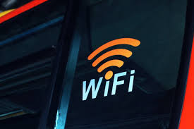

WIFI
Wi-Fi é uma tecnologia sem fio que permite a conexão de dispositivos à internet e entre si através de ondas de rádio. Utiliza pontos de acesso para transmitir dados e exige autenticação para segurança. Suporta diferentes padrões, como 802.11n, 802.11ac e 802.11ax. Sua segurança é garantida por senhas, criptografia e outras medidas. O alcance pode ser afetado por obstáculos e interferências. É amplamente utilizado em residências, empresas e espaços públicos para acesso à internet, compartilhamento de arquivos e streaming de mídia. O Wi-Fi continua a evoluir com novas tecnologias para aumentar a velocidade, eficiência e segurança das redes sem fio.